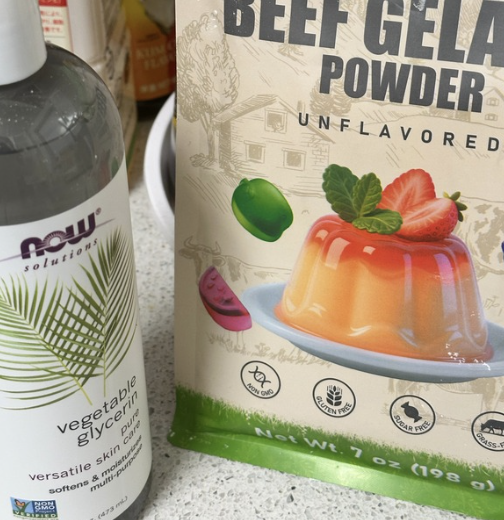
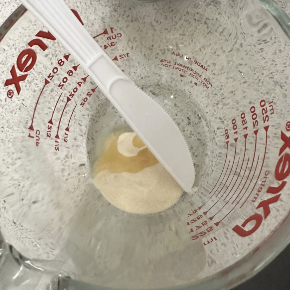
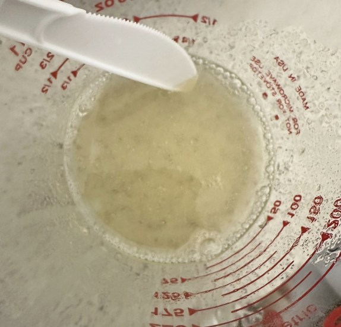
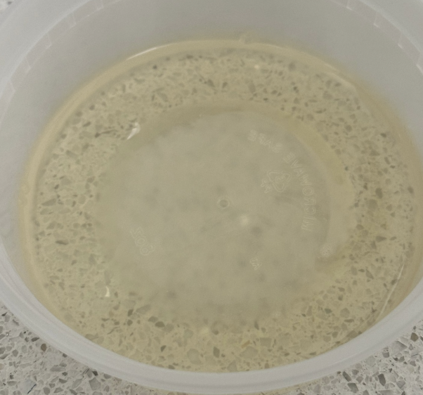
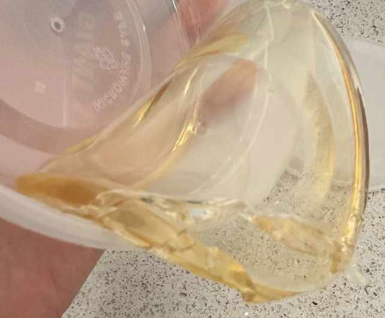
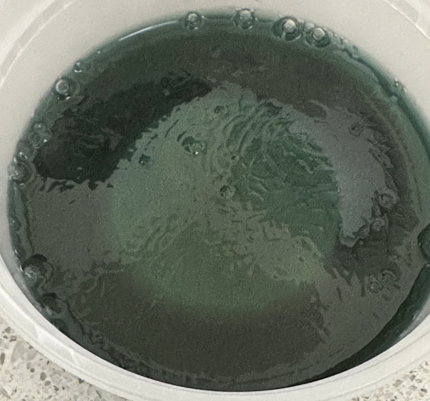
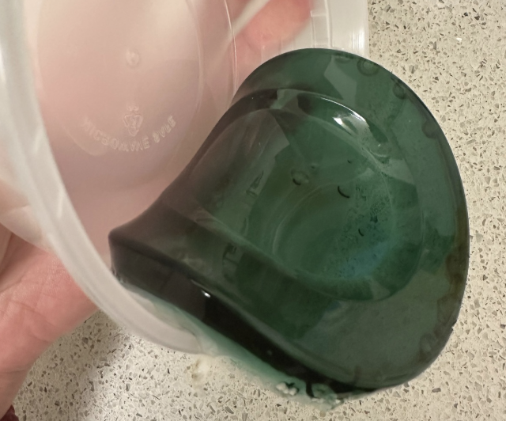
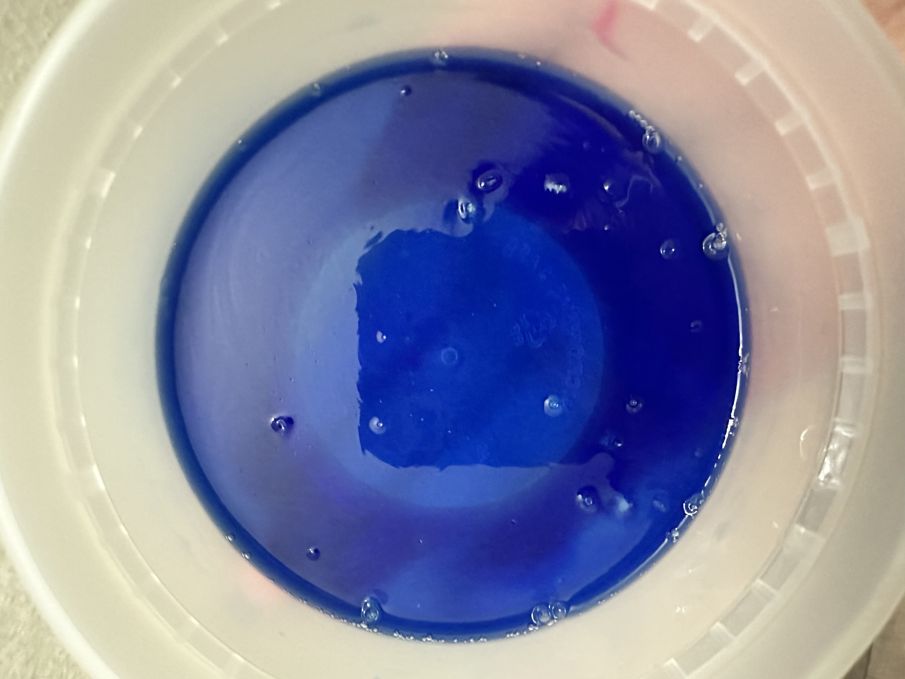
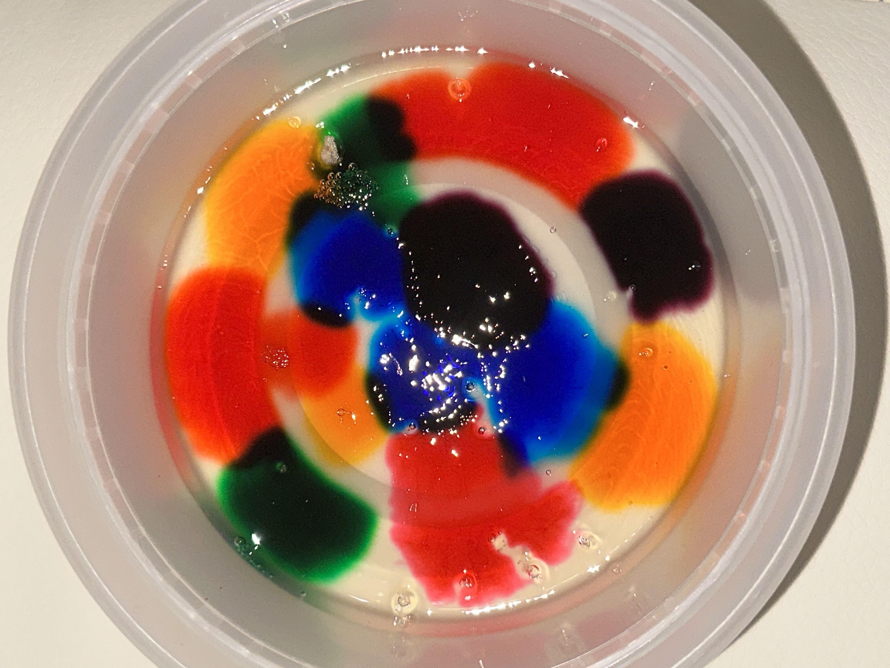

Gelatine bioplastic is a biodegradable material made from gelatine, water, and a plasticiser such as glycerine. When heated with water, the gelatine dissolves into a liquid mixture. As it cools and dries, it forms a thin solid sheet. Glycerine helps make the material softer and more flexible.

Mix 10g of gelatine powder, 60ml of water, and 4–5ml of glycerine in a heat-safe container.
Let the gelatine absorb the water for 2–3 minutes.
Heat the mixture gently in a microwave or hot water bath until the gelatine is fully dissolved.
Stir the mixture until it is smooth and lump-free.


Pour the liquid onto a flat, smooth surface.
Spread the mixture evenly into a thin layer.
Leave the bioplastic to dry for 24–48 hours.
Once completely dry, carefully peel the finished sheet away from the surface.
This is the original version without added color. The material becomes more translucent as it dries.


Food coloring can also be added to the mixture to create different colored versions of the bioplastic.



Alice wanted to experiment with a mixture of blue and a small amount of red. After the mixture rested for a while, she noticed that the colors became less visibly mixed. Because the mixture was not stirred evenly, the final result was also less clean and uniform than she expected.

Kido wanted to experiment with colorful spots. She began by adding separate drops of different colors, but after the mixture rested for a while, the colors gradually spread outward. She also had difficulty mixing the ingredients evenly.
During her first attempt, she added too little hot water and the mixture formed into a lump. She tried the recipe again with more water and achieved a better result.